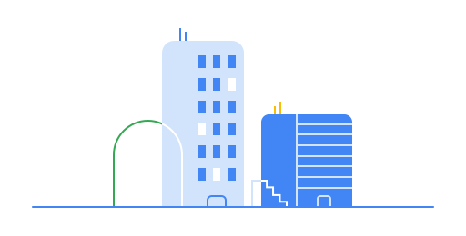

<!--
Copyright 2023 The Chromium Authors
Use of this source code is governed by a BSD-style license that can be
found in the LICENSE file.
-->

<style include="oobe-common-styles oobe-dialog-host-styles"></style>

<oobe-adaptive-dialog id="mainCurtainDialog" role="dialog"
    aria-label="$i18n{curtainTitle}">
  <iron-icon slot="icon" icon="oobe-32:enterprise"></iron-icon>
  <h1 slot="title">$i18n{curtainTitle}</h1>
  <div slot="subtitle">$i18n{curtainDescription}</div>
  <div slot="content" class="flex layout vertical center center-justified">
    <picture>
      <source srcset="images/admin_control_dark.svg"
          media="(prefers-color-scheme: dark)" class="oobe-illustration">
      
    </picture>
  </div>
</oobe-adaptive-dialog>
